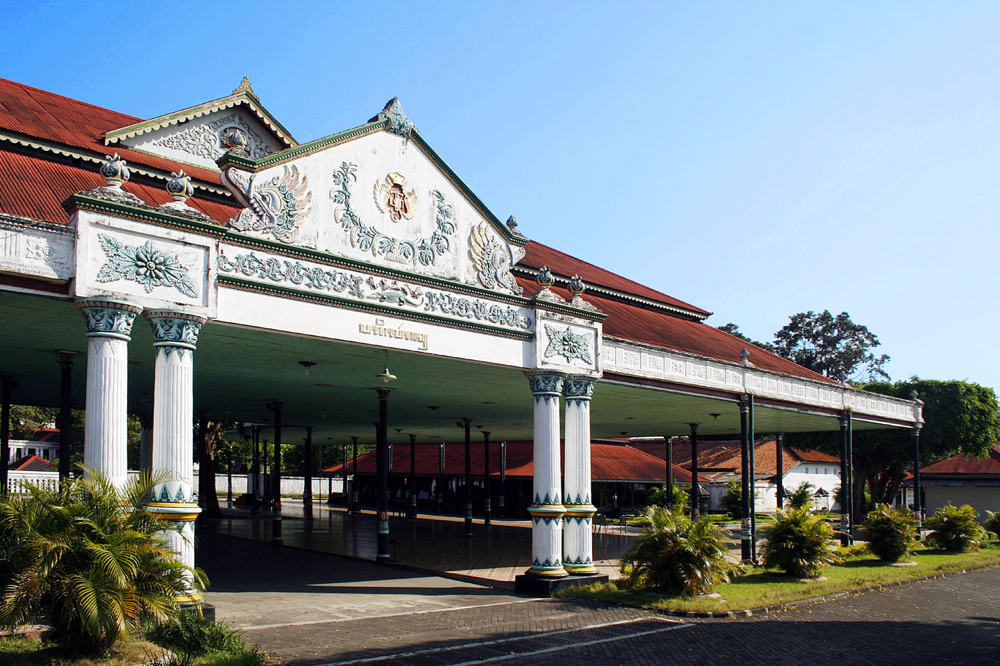

Sejarah

Berdirinya Kota Yogyakarta berawal dari adanya Perjanjian Gianti pada Tanggal 13 Februari 1755 yang
ditandatangani Kompeni Belanda di bawah tanda tangan Gubernur Nicholas Hartingh atas nama Gubernur Jendral
Jacob Mossel. Isi Perjanjian Gianti : Negara Mataram dibagi dua : Setengah masih menjadi Hak Kerajaan
Surakarta, setengah lagi menjadi Hak Pangeran Mangkubumi. Dalam perjanjian itu pula Pengeran Mangkubumi diakui
menjadi Raja atas setengah daerah Pedalaman Kerajaan Jawa dengan Gelar Sultan Hamengku Buwono Senopati Ing
Alega Abdul Rachman Sayidin Panatagama Khalifatullah.
Geografis

Kota Yogyakarta terletak antara 110°24'19"-110°28'53" Bujur Timur dan antara 07°15'24"-07°49'26" Lintang
Selatan, dengan luas sekitar 32,5 Km2 atau 1,02% dari luas wilayah Provinsi Daerah Istimewa Yogyakarta. Jarak
terjauh dari Utara ke Selatan kurang lebih 7,5 Km dan dari Barat ke Timur kurang lebih 5,6 Km.
Wisata
Yogyakarta terkenal dengan sebutan kota pelajar. Namun tidak hanya untuk belajar saja, jogja juga menjadi
destinasi tempat wisata di sekitarnya karena letak geografisnya yang di antara gunung dan pantai. Sehingga
membuat kota jogja menjadi destinasi wisata yang komplit
Kaliurang
Kawasan Wisata Kaliurang yang terletak di Kapenawon Pakem merupakan tujuan wisata favorit sejak zaman
Belanda hingga sekarang. Tak heran bila mudah menemukan bangunan berasitektur indische meskipun
tempat-tempat wisata baru terus bermunculan di Kaliurang
Pantai Parangtritis
Pantai Parangtritis hanya 27 km dari pusat Kota Jogja dan terkenal memiliki pemandangan sunset yang
romantis. Naik bendi menyusuri Pantai Parangtritis sore hari akan menjadi kenangan yang manis. Terletak 27
km selatan Kota Jogja dan mudah dicapai dengan transportasi umum yang beroperasi hingga pk 17.00 maupun
kendaraan pribadi. Sore menjelang matahari terbenam adalah saat terbaik untuk mengunjungi pantai paling
terkenal di Yogyakarta ini. Namun bila Anda tiba lebih cepat, tak ada salahnya untuk naik ke Tebing
Gembirawati di belakang pantai ini. Dari sana kita bisa melihat seluruh area Pantai Parangtritis, laut
selatan, hingga ke batas cakrawala.
Malioboro
Malioboro adalah jantung Kota Jogja. Tak heran bila banyak penginapan murah dekat Malioboro, meskipun
sekarang banyak hotel berbintang. Terkenal sebagai surga belanja cendera mata dan barang kerajinan,
ternyata tak sedikit wisatawan dan orang lokal mendatangi Malioboro pagi-pagi sekali untuk berolahraga atau
sekedar menikmati udara segar sambil mencari sarapan. Wisatawan tersebut biasanya menginap di hotel sekitar
Malioboro.